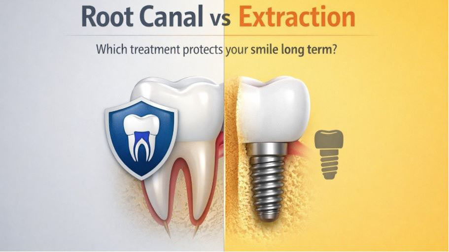

You're sitting in the dentist's chair. The X-ray is up. The tooth has been hurting for weeks, and your dentist delivers the news: it needs serious treatment. Then comes the question that sends most patients into a spiral of Google searches, second opinions, and sleepless nights:
“Should I opt for a root canal to save the tooth or simply extract it and move on?”
It feels like a simple choice. It isn't. The decision you make today will affect your oral health, your jaw structure, your confidence, and your wallet for years, sometimes decades to come. This guide gives you the complete, honest picture so you can make the right call.

Most patients assume tooth extraction is the easy, cheaper, done-and-dusted option. Extract it, forget it, move on. But dentistry has a term for what happens next: the "domino effect."
When a tooth is removed and not replaced, the teeth on either side gradually tilt into the empty space. The tooth above (or below) the gap begins to over-erupt, dropping down or rising up because it no longer has an opposing tooth to press against. The jawbone at the extraction site begins to shrink, a process called bone resorption, losing up to 25% of its width in the first year alone.
The result? Shifting teeth. A changed bite. Increased risk of gum disease. And often, a far more complicated and expensive restoration down the line, such as implants, bridges, or dentures, costs significantly more than the root canal you were trying to avoid.
This is not to say extraction is always the wrong choice. Sometimes it is the only choice or even the best one. But understanding the full consequences of each path is the only way to make a truly informed decision.
Root canal treatment (also called endodontic treatment or RCT) is a procedure to save a tooth that has become infected or severely damaged at its core, the pulp.
Your tooth has three layers: the outer enamel, the middle dentine, and the innermost pulp, a soft tissue containing nerves and blood vessels. When bacteria breach the enamel and dentine (through a deep cavity, a crack, or trauma), they infect the pulp. The result is intense pain, swelling, and, if left untreated, an abscess that can spread to the jaw and beyond.
Root canal treatment involves removing infected pulp, disinfecting the root canals, and sealing the tooth to prevent bacteria from re-entering. Here's the process step by step:
The biggest root canal myth: "It's extremely painful." Modern root canal treatment, performed under proper local anaesthesia, is no more painful than having a tooth filled. In fact, because the procedure removes the source of your pain, the infected nerve, most patients feel significant relief within 24 hours of treatment. The pain you fear is the pain you already have. The root canal ends it.
Understanding the most common myths about root canal treatment helps to stay calm before the procedure.
Tooth extraction is the complete removal of a tooth from its socket in the jawbone. There are two types:
Extraction ends one problem, and if you stop there, it begins several others. Once a tooth is gone, replacing it becomes critical. Your realistic options are:
When you factor in the cost of extraction plus replacement, extraction is rarely the cheaper option over a 10-year horizon.
| Factor | Root Canal Treatment | Tooth Extraction |
|---|---|---|
| Purpose | Save the natural tooth | Remove the damaged tooth |
| Pain during the procedure | Minimal (under local anaesthesia) | Minimal (under local anaesthesia) |
| Recovery time | 1–3 days (mild soreness) | 3–7 days (socket healing) |
| Success rate | 85–97% with crown placement | 100% – tooth is gone |
| Effect on the jawbone | Preserves bone fully | Bone loss begins within weeks |
| Effect on adjacent teeth | None, tooth stays in place | Adjacent teeth shift over time |
| Upfront cost (Bangalore) | Rs. 4,000 – 15,000 + crown | Rs. 1,500 – 6,000 (+ replacement cost) |
| Long-term cost | Lower (single restoration) | Higher when replacement is included |
| Number of visits | 1–3 visits | 1 visit + follow-ups for replacement |
| Natural tooth preserved? | Yes | No |
| Eating & function | Normal after healing | Reduced until replacement is placed |
| Best for | Infected but structurally sound tooth | Severely damaged, unsalvageable tooth |
There are genuine situations where extraction is the only viable or advisable path. These include:
This is where many patients make a costly mistake: comparing only the upfront cost of root canal versus extraction without accounting for what comes next.
| Extraction Path | Root Canal Path |
|---|---|
| Extraction cost: Rs. 1,500 – 6,000 | RCT cost: Rs. 4,000 – 15,000 |
| + Dental implant: Rs. 25,000 – 60,000 | + Dental crown: Rs. 5,000 – 20,000 |
| OR + Dental bridge: Rs. 10,000 – 25,000 | Follow-up check-ups: Minimal |
| OR + No replacement (bone loss costs later) | Tooth lasts: Potentially a lifetime |
| Total realistic cost: Rs. 30,000 – 70,000+ | Total realistic cost: Rs. 9,000 – 35,000 |
Costs vary based on tooth position (front teeth vs. molars), number of root canals, crown type, and the clinic. At Dental Wellness Bangalore, we always provide a transparent cost breakdown before treatment begins so there are no surprises.
A good dentist does not choose between root canal and extraction based on speed or convenience. The recommendation follows a clinical assessment of several factors:
| After Root Canal Treatment | After Tooth Extraction |
|---|---|
| Mild soreness for 1–3 days is manageable with over-the-counter pain relief (ibuprofen/paracetamol) | Bite on gauze for 30–45 minutes immediately after extraction to control bleeding. |
| Avoid chewing on the treated tooth until the crown is placed. | Avoid rinsing, spitting forcefully, or using straws for 24 hours to protect the blood clot. |
| Do not miss your crown appointment; an uncrowned root-canal tooth is fragile and can fracture. | Eat soft foods for 3–5 days (yoghurt, mashed foods, soups) |
| Maintain normal brushing and flossing. | Avoid smoking, it is the primary cause of 'dry socket' (a painful post-extraction complication) |
| Attend your follow-up X-ray at 6 months to confirm healing at the root tip. | Begin discussing tooth replacement with your dentist within 2–4 weeks. |
Here is the honest summary, without the hedging:
Use this checklist at your next appointment:
If your tooth can be saved, save it.
Root canal treatment, when indicated and properly performed, preserves your natural tooth, prevents bone loss, avoids the cascade of problems that follow extraction, and is almost always the better long-term investment, financially and clinically.
If your tooth is beyond saving, extract it promptly and plan your replacement immediately.
A missing tooth without a replacement plan is a different kind of problem, one that silently worsens over time. Whatever path you take, do not let fear or cost force you into inaction. That is always the worst outcome.
No, this is one of the most persistent myths in dentistry. Modern root canal treatment is performed under local anaesthesia and is comparable in discomfort to getting a filling. The pain people associate with root canals is caused by the infection itself; the RCT relieves that pain. Most patients report feeling significantly better within 24–48 hours of the procedure.
Most root canal procedures are completed in 1–2 appointments, each lasting 60–90 minutes. The number of visits depends on the complexity of the root canal system and the severity of infection. At Dental Wellness Bangalore, we use rotary endodontic systems and advanced imaging, which allows us to complete treatment efficiently without compromising precision.
Yes, though it is uncommon. Root canal retreatment or surgery (apicoectomy) can address reinfection in most cases. The long-term success rate of root canal treatment is 85–97%, especially when a proper crown is placed promptly after the procedure. Delaying the crown is one of the most common reasons for root canal failure.
Ideally, within 3–6 months. Some cases allow for immediate implant placement on the day of extraction. The longer you wait, the more bone resorption occurs, which can compromise the implant's stability and may require additional bone grafting procedures. Early planning with your dentist is key.
The root canal vs extraction debate almost always has a clear answer when you have all the information in front of you. Most teeth that patients want to 'just pull out' can and should be saved. Most patients who choose root canal treatment are glad they did.
What matters most is acting quickly. Dental infections do not improve with time. Whether the answer is root canal treatment or extraction followed by replacement, an early diagnosis gives you the most options and the best outcome.
If you face this decision and want honest, expert evaluation without pressure to pick the most expensive option, our team at Dental Wellness Bangalore can help.
Book a consultation at Dental Wellness Bangalore — AECS Layout & Whitefield. Our endodontists will assess your tooth, provide a clear diagnosis, and walk you through every option with full cost transparency and no pressure. Book Your Appointment Today
BDS, MDS (Conservative Dentistry & Endodontics)
Dr. Shobha Nangrani is the Founder of Dental Wellness Bangalore with over 10 years of experience in Root Canal Treatment and Cosmetic Dentistry. She is an MDS specialist in Endodontics, a Colgate Scholarship awardee, and a Fellow in Cosmetic Dentistry (ENCODE, Mumbai). This content has been medically reviewed for accuracy and clinical relevance.